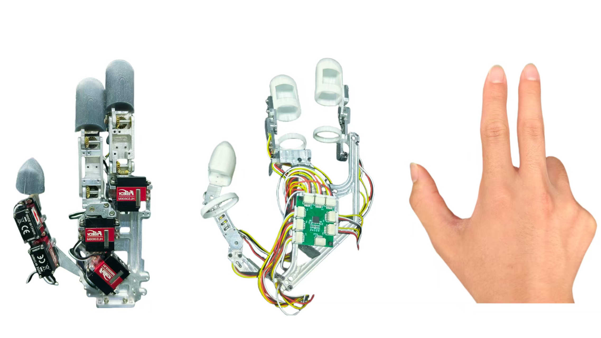

I'm an undergraduate student at the University of Washington, currently a research assistant in Personal Robotics Lab, advised by Prof. Siddhartha Srinivasa. Also, I'm honored to work with Prof. Yiyue Luo and PhD student Yunchu Zhang. My research interests lie in robot design and robot learning.
Previously, I was honored to intern at Galaxea Dynamics. Also, I had worked as a research assistant at the Institute for AI Industry Research, Tsinghua University.
News
Research
I am passionate about robot design and robot learning, My goal is to build reliable system to enhance robotic performance. My dream is to become a full-stack roboticist.
Herein I present some of my past projects.


Our team has developed a robot capable of picking up seedlings and shooting balls. It achieves precise grasping through a parallel four-finger gripper and enables accurate control of the ball's landing point via the simultaneous action of bidirectional friction wheels.

The robot adopts a modular design, allowing for adjustments in leg length and track length to suit different usage scenarios. It achieves a combined wheel-leg mechanism through a metamorphic mechanism, featuring variable track angles and an 8-degree-of-freedom joint design.
report / demo

Experiences

R&D intern · Mar. 2025 to Aug. 2025
Responsible for research and development of dexterous hand and its teleoperation system, work with Prof. Huazhe Xu.
Misc
I'm interested in sports (soccer, basketball, skiing…), playing drums and traveling.

This is a student band formed by a group of young people with passion and dreams. We have performed countless times on stage, playing pop music and rock music.
Designed and sourced code based on Jon Barron's website.